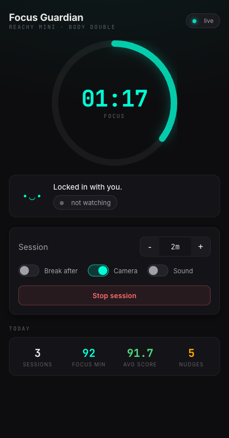

Start a timed session and your Reachy Mini becomes a quiet companion. It senses when you're engaged, reacts when you drift, and celebrates when you finish.

Most focus tools count down in a browser tab you can ignore. This one sits on your desk and reacts to you.
Set a duration and an optional break. The robot wakes into an attentive posture and the focus ring begins to count down.
Reads whether you're present and engaged from the robot's camera. Motion-presence by default, with an optional vision model for real engagement.
An attentive posture on start, gentle breathing while you work, a nudge when you slip, a celebration when you finish. Sound is off by default.
Sessions, focused minutes, average score, and nudges, tracked across the day so you can see your patterns.
Pick a duration in the panel and press start. The robot wakes up and the ring lights.
The camera reads presence and engagement a few times a second while you work, quietly.
Breathing while you focus, a nudge when you drift, a celebration when the timer hits zero.